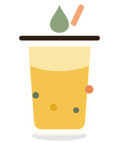

Home / About
Started with one stubborn question: why not both?
Why choose between a menu you trust and a drink that's truly yours? Marigold Sip Co. was built to give you both — a small, obsessively-crafted signature menu, and a builder that lets anyone become their own barista.

A cart, a Saturday market, and too many opinions about oat milk.
Marigold Sip Co. began in 2019 as a single cart at the Sunday farmers market, run by two friends who couldn't agree on how sweet a latte should be — so they started letting customers decide instead. That one small act of letting people choose became the whole business.
Today we're a full storefront on Marigold Lane, but the instinct hasn't changed: we make a small menu of drinks we're proud to put our name on, and we build the tools for you to make everything else exactly the way you like it.
Where we've been
The cart
Marigold Sip Co. opens as a weekend cart at the Portland farmers market with four drinks and a lot of ambition.
The storefront
We open our first permanent location on Marigold Lane and introduce the build-your-own counter format.
Direct sourcing
We begin sourcing coffee, tea and fruit directly from three partner farms we now visit every year.
The digital builder
Our in-store drink builder goes online, so you can design your cup before you even walk in.
Ingredients we can name the farm for
Coffee
Direct-trade, single-origin
Tea
Small-lot, hand-picked
Dairy & Oat
Local creamery blends
Fruit
Peak-season, regional
Meet the team
Jules Ferreira
Co-Founder & Head RoasterStarted the original market cart in 2019 and still shows up for the 5am roast every Tuesday.
Priya Nandan
Co-Founder & Flavor LeadDesigns every seasonal syrup and signature drink — and approves every new builder combo.
Sam Okoye
Counter & Community LeadRuns the storefront day to day and remembers most regulars' orders by heart.
Come taste the difference for yourself.
Stop by Marigold Lane, or start designing your drink right now.